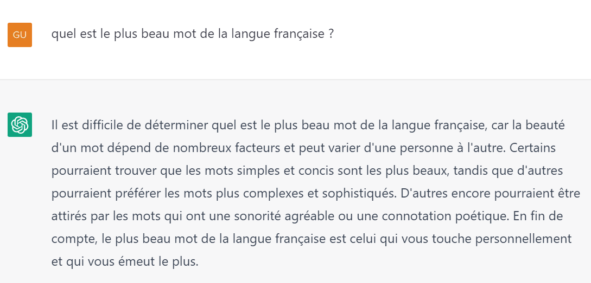
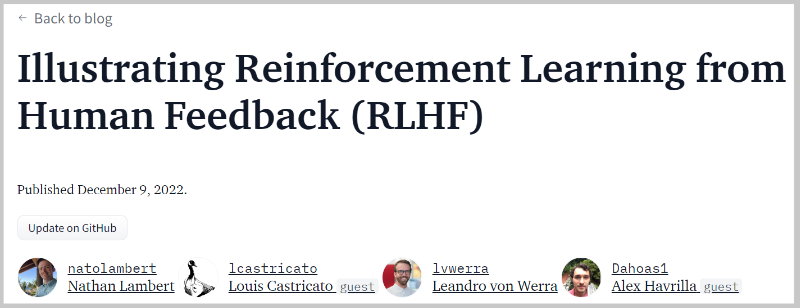

Week 48 - December 22
Thursday 12/01
fastai course lesson 8 - Convolutions (CNNs)
Running through lesson 8
Week 49 - December 22
Monday 12/05
ChatGPT
Waiting for some models to be trained, I have some time to play with ChatGPT from openai.
Some questions:
what are the causes of climate change in France?
and what are the options to face it?
how to train a deep neural network with fastai?
what is the most beautiful Franch word?

nice and fun!
Week 50 - December 22
Monday 12/12
fastai course lesson 8 - Convolutions (CNN)
Continuing lesson 8
Wednesday 12/14
ChatGPT and RLHF Reinforcement Learning from Human Feedback
1 hour live from Nathan Lambert and Nathan Lambert
And there is a blog post written by Nathan and all. (on HuggingFace blog) Illustrating Reinforcement Learning from Human Feedback (RLHF)
